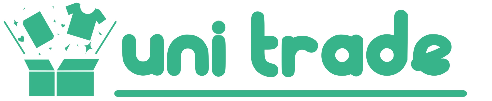
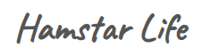

4
二刀流（フロント＆バック）
おおはた あやね
大畑 彩音
- ポジション
- フルスタック志望
- 打撃（フロント）
- HTML、CSS
- 守備（バック）
- Java、SpringBoot
- 好きな球団
- ベイスターズ、ホークス
0%
いま勉強中
Spring Boot
推しカラー
4
二刀流（フロント＆バック）
おおはた あやね
大畑 彩音
野球観戦が好きで、ベイスターズとホークスを応援しています。なかでも、ピッチャーとキャッチャーが呼吸を合わせて抑える場面が好きです。
開発でも、信頼できる仲間とは遠慮なく意見を言い合っていいものが作れると感じています。初対面の人との開発はまだ得意ではありませんが、グループ開発やメンターの経験を通して少しずつ慣れてきました。フロントもバックも守れる二刀流を目指しています。
使える技術を打順にしました。1〜6番は開発経験があり勉強中の技術、7〜9番はこれから挑戦したいこと、ベンチは気になっているものです。
ベンチ：Ruby興味あり
音楽特化型SNS
開発中

学内フリーマーケットシステム
完成（非公開）
書籍ショッピングECサイト
完成（非公開）
就活中の学生向けスケジュール管理アプリ
開発中
架空のクリニックWebサイト
開発中

ハムスターの種類・飼育方法解説サイト
公開中
学校
KCS北九州情報専門学校 大学併修学科
北海道情報大学 経営情報学部 システム情報学科
〜 在学中（ 卒業見込み）
インターンや仕事のご相談は、こちらからどうぞ。